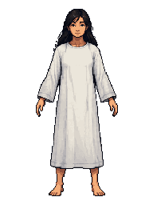

按用户确认方向只调整脸、脖子、手和脚。白袍、头发、姿势、比例与透明轮廓均保留v1原像素。少量面部色块承担朝向和体积，省略明确眉眼与嘴角。本页为造型候选，侧面、背面和3D模型尚未制作。
主体修改来自一次PixelLab局部编辑。Aseprite保留原始底稿和独立AI修改层；另有54像素的Aseprite局部精修，清理AI残留眉眼与嘴线，独立图层保留；没有程序化做旧。来源与验证 · Aseprite母版 · 最终PNG
